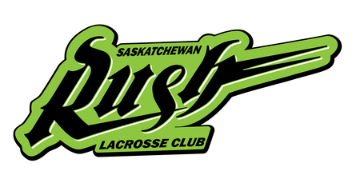
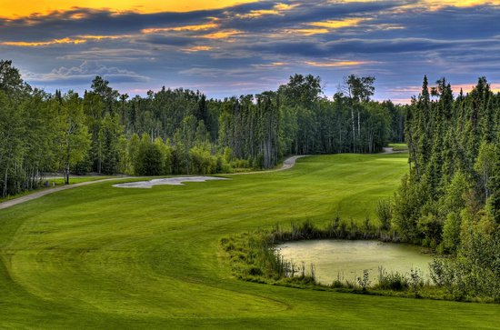
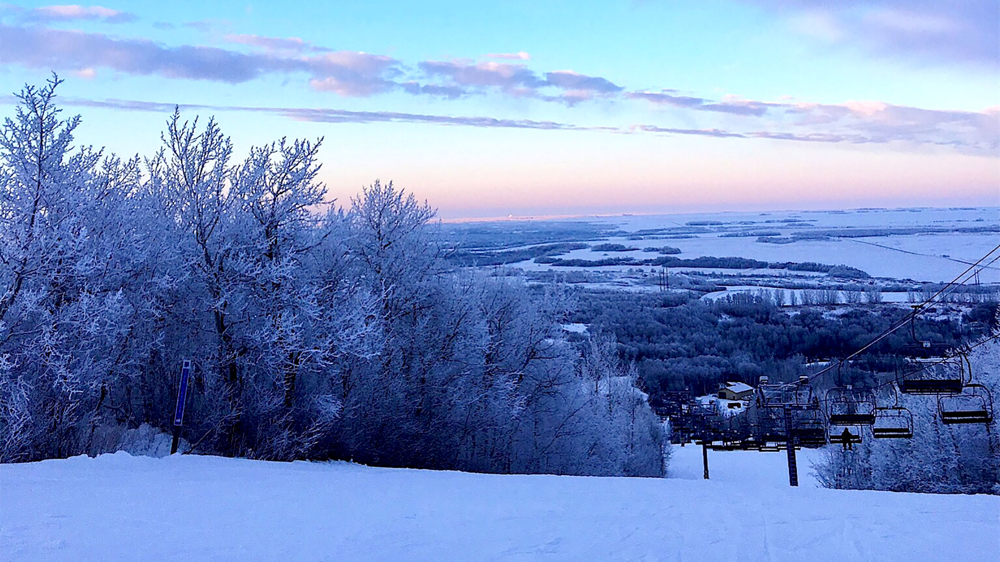

Map of Saskatoon
Current Weather
Saskatoon, Saskatchewan
Professional Teams
Saskatchewan Rush - NLL Lacrosse

Season: December to May
Venue: SaskTel Centre
Website: Saskatchewan Rush
Twitter: @SaskRushLAX
Recreational Activities
Golf

Dakota Dunes Golf Links
Website: Dakota Dunes Golf Links
Location: Whitecap, Saskatchewan (0.5hr drive from Saskatoon)
Waskesiu Golf Course
Website: Waskesiu Golf Course
Location: Waskesiu Lake, Saskatchewan (2.5hr drive from Saskatoon)
Riverside Country Club
Website: Riverside Country Club
Location: Saskatoon, Saskatchewan (0.25hr drive from Saskatoon)
Elk Ridge Resort
Website: Elk Ridge Resort
Location: Waskesui Lake, Saskatchewan (2.5hr drive from Saskatoon)
Website: Dakota Dunes Golf Links
Location: Whitecap, Saskatchewan (0.5hr drive from Saskatoon)
Waskesiu Golf Course
Website: Waskesiu Golf Course
Location: Waskesiu Lake, Saskatchewan (2.5hr drive from Saskatoon)
Riverside Country Club
Website: Riverside Country Club
Location: Saskatoon, Saskatchewan (0.25hr drive from Saskatoon)
Elk Ridge Resort
Website: Elk Ridge Resort
Location: Waskesui Lake, Saskatchewan (2.5hr drive from Saskatoon)
Ski

Wapiti Valley Ski Resort
Website: Wapiti Valley Ski Resort
Location: Wapiti Valley, Saskatchewan (2.5hr drive from Saskatoon)
Ski Timber Ridge
Website: Ski Timber Ridge
Location: Big River, Saskatchewan (2.5hr drive from Saskatoon)
Table Mountain Ski & Board Club
Website: Table Mountain
Location: Battleford, Saskatchewan (2hr drive from Saskatoon)
Website: Wapiti Valley Ski Resort
Location: Wapiti Valley, Saskatchewan (2.5hr drive from Saskatoon)
Ski Timber Ridge
Website: Ski Timber Ridge
Location: Big River, Saskatchewan (2.5hr drive from Saskatoon)
Table Mountain Ski & Board Club
Website: Table Mountain
Location: Battleford, Saskatchewan (2hr drive from Saskatoon)